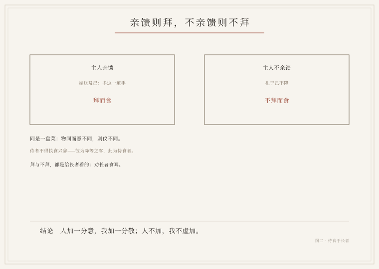

曲礼上 · 一·六十六 · 第 64 课
陪长辈吃饭：主人若亲自端菜给你，就拜谢而后吃；主人不亲自端，就不拜而吃。所拜的不是菜，是「亲馈」这一份意。
说什么事：侍食于长者，主人亲馈，则拜而食。主人不亲馈，则不拜而食。
落在哪一层：仪。上节讲侍饮之起，此节讲侍食之拜。
为何编在此位：一·六十五讲「客不虚口」为止，此节另起一路：不是自为客，而是侍长者为客。
【经】侍食於長者，主人親饋，則拜而食。主人不親饋，則不拜而食。
【注】勸長者食耳。雖賤，不得執食興辭，拜而已，示敬也。以其禮於己不隆。
侍食于长者 疏：「乡是自为客法，此明侍从尊长为客礼也。」乡，同「向」，指上文一·六十至一·六十五诸节。
主人亲馈 注：「馈，谓进馔也。」亲馈，主人亲自端送。
则拜而食 疏：「己虽侍尊长，而主人若自亲馈与己，己则拜谢之而后食也。」
不得执食兴辞 注：「虽贱，不得执食兴辞，拜而已。」此正与一·六十二「客若降等，执食兴辞」相对：彼是客，此是侍者；彼可执食而起，此只可拜。
以其礼于己不隆 注释「不亲馈则不拜」之故：礼不加厚于己，则不必拜。
陪长辈吃饭时，主人若亲自端来饭菜，就拜谢而后吃；主人若不亲自端，就不拜而吃。
一节两句，只在一个「亲」字上分。拜与不拜，看的不是菜之厚薄，是主人是否亲手。礼在这里把「物」与「意」分得很清：物同而意不同，则仪不同。
第一层 亲馈是意 菜是同一盘菜；亲馈者，主人自己端来。多这一道手，礼就多一层。此节教人识「意」：礼所敬者常在那多余的一步上。
第二层 拜而不辞 注说得明白：侍者虽贱，不得「执食兴辞」，只能拜。一·六十二的客可以端饭起身辞谢，侍者不可以。同是辞让，而分有差：客可辞，侍者只可拜。
第三层 礼不隆则不拜 注「以其礼于己不隆」。礼若不加厚，拜则成虚。此条最见礼的节制：不当拜而拜，是把主人的寻常当厚意，反使主人不安。
第四层 劝长者食 注首四字「劝长者食耳」，把这一节的目的说到底：侍食者吃的姿态，是为了让长者吃得安。拜与不拜，都是给长者看的。
与今日何干 今人待客，主人亲自下厨、亲自端菜，客若无所表示，主人心里便空。此节立的是一条简便的尺：人加一分意，我加一分敬；人不加，我不虚加。
| 左 | 右 |
|---|---|
| 侍食于长者 | 侍从尊长为客，非自为客 |
| 主人亲馈 | 主人亲进馔 |
| 则拜而食 | 拜谢而后食，示敬 |
| 不得执食兴辞 | 侍者只可拜，不可执食而起 |
| 不亲馈则不拜 | 礼于己不隆，拜则虚 |
| 劝长者食 | 侍食者的姿态，为长者而设 |
画一案两段：案左一段上放一只饭器，器旁有主人端送的两道手痕（案面被压出的浅痕），案右一段空着只放一只小豆。两段之间以一道细线分开。不画人、不写文字。赭色只在饭器口沿与那两道手痕的末端。
